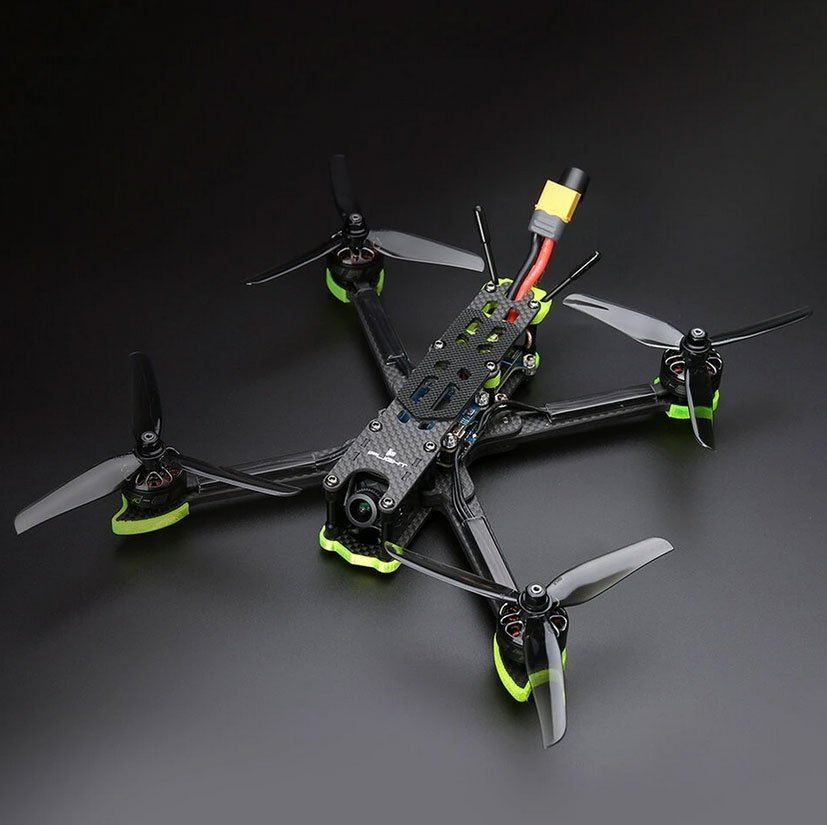

iFlight Nazgul 5

iFlight Nazgul 5 to dron zaprojektowany specjalnie dla miłośników lotów FPV. Poznaj jego wyjątkowe cechy:
- Szybki i zwrotny: Nazgul 5 oferuje dynamiczny i zwrotny lot, co pozwala na imponujące manewry w powietrzu.
- Wydajny napęd: Dron jest wyposażony w mocne silniki, które zapewniają szybkie przyspieszenia i dużą prędkość.
- Odpowiedni dla FPV: iFlight Nazgul 5 jest gotowy do lotów w trybie FPV i obsługuje gogle FPV.